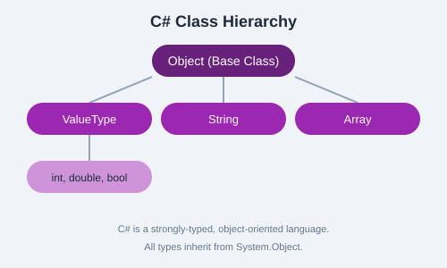

The static File class provides simple file operations.
using System.IO;
// Reading
string content = File.ReadAllText("data.txt");
string[] lines = File.ReadAllLines("data.txt");
// Writing
File.WriteAllText("output.txt", "Hello World");
File.AppendAllText("log.txt", "New log entry\n");
// Checking & Deleting
if (File.Exists("old.txt")) {
File.Delete("old.txt");
}
// Copy & Move
File.Copy("source.txt", "backup.txt", overwrite: true);
File.Move("temp.txt", "final.txt");// Reading line by line
using (StreamReader sr = new StreamReader("data.txt")) {
string line;
while ((line = sr.ReadLine()) != null) {
Console.WriteLine(line);
}
}
// Writing with StreamWriter
using (StreamWriter sw = new StreamWriter("output.txt")) {
sw.WriteLine("First line");
sw.WriteLine("Second line");
}// Directory operations
Directory.CreateDirectory("MyFolder");
string[] files = Directory.GetFiles("MyFolder");
string[] dirs = Directory.GetDirectories(".");
// Path utilities
string fullPath = Path.Combine("folder", "file.txt");
string ext = Path.GetExtension("file.txt");
string name = Path.GetFileNameWithoutExtension("file.txt");
Write a C# program that applies the concepts covered in this chapter. Experiment with different inputs and test your understanding.